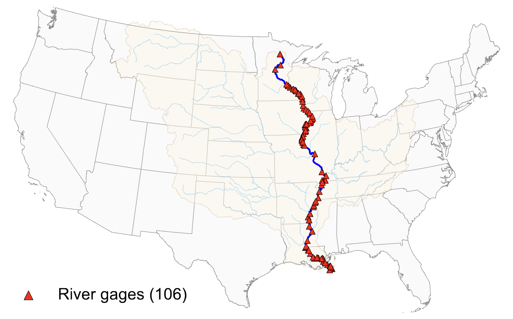

River Gage Stage Data Puller

Daily river-stage series for 106 USACE gages along the Mississippi mainstem, with station coordinates. The script rebuilds the station list by name on each run, and you can point it at any U.S. river (e.g., Arkansas, Illinois, etc.) by changing one line.
- If you use this dataset, please cite: Kang, M. and Lee, S. (2025) "Extreme Weather and Trade Costs: Evidence from Mississippi River Drought." SSRN Working Paper.
- Underlying Data Source: U.S. Army Corps of Engineers, RiverGages (https://rivergages.mvr.usace.army.mil/WaterControl/new/layout.cfm).